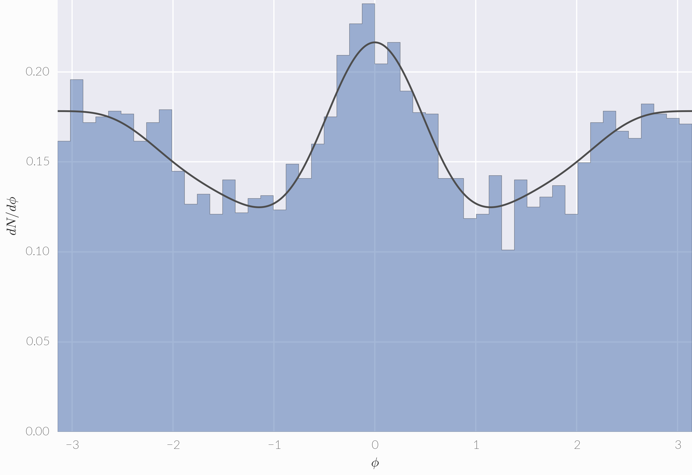

Anisotropic flow¶
The flow module handles anisotropic flow coefficients \(v_n\) and related tasks.
Flows \(v_n\) are the Fourier coefficients of the transverse momentum distribution:
where \(\phi\) is the azimuthal angle of transverse momentum, \(n\) is the order of anisotropy, and \(\Psi_\text{RP}\) is the reaction plane angle (the angle between the impact parameter and the x-axis in the lab frame). The coefficients are
where the average is over all particles and events.
The flow vector¶
The complex flow vector for an event is
The magnitude of the per-particle flow vector is the observed flow \(v_n^\text{obs} = |Q_n|/M\), which will in general be different from the true flow due to finite-multiplicity fluctuations.
Flow vectors can be calculated in hic with hic.flow.qn. First, let’s generate some random angles:
import numpy as np
phi = np.random.uniform(-np.pi, np.pi, 100)
And now calculate \(Q_2\):
from hic import flow
q2 = flow.qn(phi, 2)
We can also do multiple \(Q_n\) at once:
q2, q3, q4 = flow.qn(phi, 2, 3, 4)
Flow cumulants¶
Multi-particle flow cumulants are implemented in class hic.flow.Cumulant using the direct Q-cumulant method from Bilandzic (2010), which calculates cumulants from event-by-event multiplicities and \(Q_n\) vectors.
Let’s generate some toy data:
# 1000x1000 array, where each row is an "event" of 1000 particles
phi = np.random.uniform(-np.pi, np.pi, size=1000*1000).reshape(1000, 1000)
mult = np.array([p.size for p in phi])
q2 = np.array([flow.qn(p, 2) for p in phi])
Then create a Cumulant:
vnk = flow.Cumulant(mult, q2)
And now we can calculate flow correlations and cumulants. The correlation function \(\langle 2 \rangle_2\):
corr22 = vnk.correlation(2, 2)
The cumulant \(c_2\{2\}\):
c22 = vnk.cumulant(2, 2)
The flow coefficient \(v_2\{2\}\):
v22 = vnk.flow(2, 2)
Sometimes flow cumulants \(v_n\{k\}\) will be imaginary, especially higher-order cumulants (\(k > 2\)). In this case, the keyword argument imaginary determines what Cumulant.flow() returns:
- 'nan' (default) – Return NaN and raise a RuntimeWarning.
- 'negative' – Return the negative absolute value.
- 'zero' – Return 0.0.
Depending on the random seed the current example may have imaginary \(v_2\{2\}\) and so vnk.flow(2, 2) will return Nan. If instead you want the negative absolute value:
v22 = vnk.flow(2, 2, imaginary='negative')
That’s all we can calculate with the current data since we only have \(Q_2\). In general, flow coefficient \(v_n\{k\}\) requires \(Q_n, Q_{2n}, \ldots, Q_{nk/2}\), e.g.
- \(v_2\{2\}\) requires only \(Q_2\)
- \(v_3\{4\}\) requires \(Q_3\), \(Q_6\)
- \(v_2\{6\}\) requires \(Q_2\), \(Q_4\), \(Q_6\)
If you attempt to calculate something and don’t have sufficient data, you’ll get an exception:
vnk.flow(3, 2) # raises ValueError
Let’s calculate some higher-order flow vectors and use them:
q3, q4 = np.array([flow.qn(p, 3, 4) for p in phi]).T
vnk = flow.Cumulant(mult, q2, q3, q4)
v32 = vnk.flow(3, 2) # works now
v24 = vnk.flow(2, 4) # works
v42 = vnk.flow(4, 2) # works
v52 = vnk.flow(5, 2) # ValueError (no q5!)
There are multiple ways to pass flow vector data to the Cumulant class. So far we’ve used the shorthand syntax, where we list qn in order starting with q2. You can skip a qn by specifying None, for example if you have q2 and q4 but not q3:
flow.Cumulant(mult, q2, None, q4)
You can also use keyword arguments in any order, e.g.:
flow.Cumulant(mult, q2=q2, q4=q4)
Note that the only way to pass q1 is through a keyword argument. Here are some more examples—these are all equivalent:
q2, q3, q4, None, q6
q2, q3, q4, q6=q6
q2, q3=q3, q4=q4, q6=q6
q6=q6, q4=q4, q3=q3, q2=q2
Random sampling¶
In the last section we sampled random azimuthal angles uniformly from \([-\pi, \pi)\), i.e. from a fictitious event with zero flow. Class hic.flow.Sampler generates random angles with nonzero flow by sampling \(dN/d\phi\) as a probability density function (PDF). For example to sample 1000 angles with \(v_2 = 0.1\):
sampler = flow.Sampler(0.1)
phi = sampler.sample(1000)
The syntax for specifying \(v_n\) is the same as \(Q_n\) for Cumulant: either the shorthand list starting from v2 or keyword arguments. These are all equivalent:
0.1, None, 0.02
0.1, v4=0.02
v2=0.1, v4=0.02
Sampler can also evaluate evaluate \(dN/d\phi\) rather than sampling it:
phi = np.linspace(-np.pi, np.pi, 1000)
dndphi = sampler.pdf(phi)
Let’s put this together to sample the flow PDF and histogram the samples on top of the smooth curve:
import matplotlib.pyplot as plt
import seaborn as sns # nice plot style
sns.set(font='Lato')
M = 10000
vn = .1, .05, .02, .01 # shorthand: v2, v3, v4, v5
sampler = flow.Sampler(*vn)
phi = sampler.sample(M)
plt.hist(phi, bins=50, range=(-np.pi, np.pi),
histtype='stepfilled', normed=True, alpha=.5)
x = np.linspace(-np.pi, np.pi, 1000)
plt.plot(x, sampler.pdf(x), color='.3', lw=1.5)
plt.xlim(-np.pi, np.pi)
plt.ylim(ymin=0)
plt.xlabel(r'$\phi$')
plt.ylabel(r'$dN/d\phi$')
This should make an image something like this:
We can also check the observed flows against the inputs:
vnobs = np.abs(flow.qn(phi, *range(2, 6))) / M
list(zip(vn, vnobs))
They should be fairly close since the multiplicity was quite large.
Reference¶
Note
The flow module makes repeated use of the *args, **kwargs idiom. See stackoverflow for an explanation and the user guide above for usage examples.
- hic.flow.qn(phi, *n)¶
Calculate the complex flow vector \(Q_n\).
Parameters: - phi (array-like) – Azimuthal angles.
- n (int) – One or more harmonics to calculate.
Returns: A single complex number if only one n was given or a complex array for multiple n.
- class hic.flow.Cumulant(multiplicities, *qn, **qn_kwargs)¶
Multi-particle flow correlations and cumulants for an ensemble of events.
Each argument must be an array-like object where each element corresponds to an event: multiplicities is an array containing event-by-event multiplicities, q2 is an array of the same size containing the \(Q_2\) vectors for the same set of events, and so on.
Parameters: - multiplicities (array-like) – Event-by-event multiplicities.
- q2, q3, ... (array-like) – \(Q_n\) vectors as positional arguments.
- qn_kwargs (array-like) – \(Q_n\) vectors as keyword arguments.
Member functions correlation, cumulant, and flow compute the correlation function, cumulant, and flow coefficient, respectively. Each takes two arguments (n, k) where n (positive integer) is the anisotropy order and k (even positive integer) is the correlation order. A given \((n, k)\) requires flow vectors \(Q_n, Q_{2n}, \ldots, Q_{nk/2}\), e.g. (2, 4) requires q2, q4. Functions will raise ValueError if they don’t have the required flow vectors. Currently k=2 and k=4 are implemented; k=6 is planned.
- correlation(n, k)¶
Calculate \(\langle k \rangle_n\), the \(k\)-particle correlation function for \(n\)th-order anisotropy.
Parameters: - n (int) – Anisotropy order.
- k (int) – Correlation order.
- cumulant(n, k, error=False)¶
Calculate \(c_n\{k\}\), the \(k\)-particle cumulant for \(n\)th-order anisotropy.
Parameters: - n (int) – Anisotropy order.
- k (int) – Correlation order.
- flow(n, k, error=False, imaginary='nan')¶
Calculate \(v_n\{k\}\), the estimate of flow coefficient \(v_n\) from the \(k\)-particle cumulant.
Parameters: - n (int) – Anisotropy order.
- k (int) – Correlation order.
- imaginary (str) –
(optional) Determines behavior when the computed flow is imaginary:
- 'nan' (default) – Return NaN and raise a RuntimeWarning.
- 'negative' – Return the negative absolute value.
- 'zero' – Return 0.0.
- class hic.flow.Sampler(*vn, **vn_kwargs)¶
Random flow event generator.
A Sampler object represents an event with specified flow coefficients \(v_n\). It computes and randomly samples \(dN/d\phi\) as a probability density function (PDF).
Parameters: - v2, v3, ... (float) – Flow coefficients as positional arguments.
- vn_kwargs (float) – Flow coefficients as keyword arguments.
If no vn arguments are given, Sampler will have zero flow, i.e. Sampler.pdf() will be flat and Sampler.sample() will generate uniform numbers from \([-\pi, \pi)\).
- pdf(phi)¶
Evaluate the flow PDF \(dN/d\phi\).
Parameters: phi (array-like) – Azimuthal angles. Returns: The flow PDF evaluated at phi.
- sample(multiplicity)¶
Randomly sample azimuthal angles \(\phi\).
Parameters: multiplicity (int) – Number to sample. Returns: Array of sampled angles.